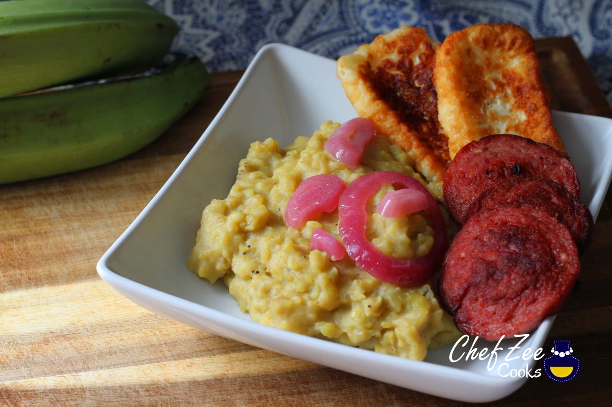

Mangu

Description:
English: Mangu is a commonly eaten breakfast or morning food eaten in the Dominican Republic! Its a fluffy and tasty mashed plantain dish!
Spanish: Mangu es un desayuno comunmente consumido en la Republica Dominicana! es un puré de platano macho esponjoso y sabroso!
Ingredients:
- 2 plantains
- 3/2 teaspoons salt
- 4 tablespoons butter or olive oil
- Optional: onions, salami, and viniger
Steps:
- Boil a pot of water at high heat
- Peel the plantain starting from the top of the stem
- Add the peeled plantains into the boiling water and make sure all the plantains are completely covered in boiling water
- Add salt into the water and boil until the plantains are tender
- Take out the plantains and mash them with a fork in a bowl while adding the butter/oil and room tempurature water
- Mash until you get a smooth puree with no lumps
Optional:
- Fry the onions and salami
- add viniger and salt to the onions
- Combine them all together as seen in the picture
- Enjoy! Disfruitar!